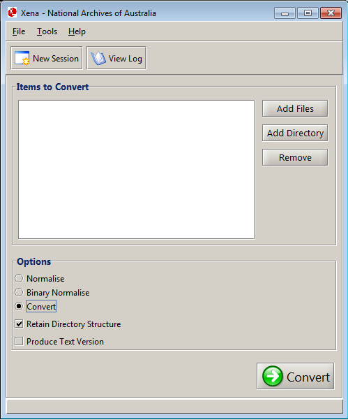

You can select from several options prior to converting any files. These options are available via the main Xena window:

This option must be selected to convert the selected input files.
This is selected by default. Any files converted with this option have their original directory structure preserved. This is a useful feature if you are converting files with a complex directory structure, such as archives.
Xena will create a human readable text version of the converted file in the text-version sub-directory of the Xena destination directory (see Setting Preferences).
Xena will only produce text versions of certain file types, where they actually include text (a photograph of the beach will not work). Supported file types include: